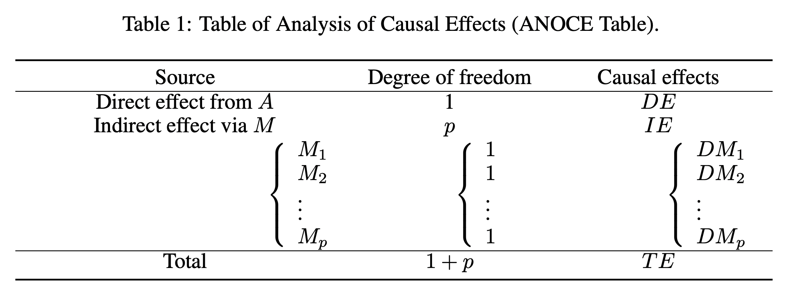

Causal Discovery Preliminary
Contents
Causal Discovery Preliminary#
Most existing methodologies for average / heterogeneous treatment effects and personalized decision making rely on a known causal structure. This enables us to locate the right variables to control (e.g., confounders), to intervene (e.g., treatments), and to optimize (e.g., rewards). However, such a convenience is violated in many emerging real applications with unknown causal reasoning. Causal discovery thus attracts more and more attention recently to infer causal structure from data and disentangle the complex relationship among variables. In the following, we review the basic terminologies in causal discovery, discuss how these related to average / heterogeneous treatment effects and personalized decision making, and detail three classical ways of causal discovery.
General Causal Graph Terminology#
Consider a graph \(\mathcal{G} =(Z,E)\) with a node set \(Z\) and an edge set \(E\). A node \(Z_i\) is said to be a parent of \(Z_j\) if there is a directed edge from \(Z_i\) to \(Z_j\). Let the set of all parents of node \(Z_j\) in \(\mathcal{G}\) as \(PA_{Z_j} (\mathcal{G})\). A directed graph that does not contain directed cycles is called a directed acyclic graph (DAG). Suppose a DAG \(\mathcal{G}=(Z,E)\) that characterizes the causal relationship among \(|Z|=d\) nodes, where \(Z=[Z_1,Z_2,\cdots,Z_d]^\top \) represents a random vector and an edge \(Z_i\rightarrow Z_j\) means that \(Z_i\) is a direct cause of \(Z_j\).
Toy Example 1: Causal Graph for Heterogeneous Treatment Effect and Personalized Decision Making#
In this example, the feature \(S\) determines the treatment assignment \(A\) (i.e., \(S\rightarrow A\)) and the outcome \(R\) (i.e., \(S\rightarrow R\)), and the treatment assignment \(A\) further influences the outcome \(R\) (i.e., \(A\rightarrow R\)).

Based on this causal graph, to optimize the outcome of interest, the doctor should assign the right treatment according to different features. Thus, the methods for personalized decision making focus on modeling the conditional mean outcome and the propensity score.
Toy Example 2: Causal Graph for Causal Mediation Analysis#
Causal mediation analysis (CMA) is a method to dissect total effect of a treatment into direct and indirect effect. The direct effect is how the treatment directly affects the outcome, and the indirect effect is transmitted via mediator \(M\) to the outcome.

Pearl et al. (2009) provided a comprehensive review of recent advances in causal mediation analysis using ‘do-operator’ by graphical methods. Let \(M=[M_1,M_2,\cdots,M_p]^\top \) be mediators with dimension \(p\). Suppose there exists a weighted DAG \(\mathcal{G}=(Z,E)\) that characterizes the causal relationship among \(Z=[A, M^\top, R]^\top \). The total effect (\(TE\)), the natural direct effect that is not mediated by mediators (\(DE\)), and the natural indirect effect that is regulated by mediators (\(IE\)) are defined as:
where \(do(A=a)\) is a mathematical operator to simulate physical interventions that hold \(A\) constant as \(a\) while keeping the rest of the model unchanged, which corresponds to remove edges into \(A\) and replace \(A\) by the constant \(a\) in \(\mathcal{G}\). Here, \(m^{(a)}\) is the value of \(M\) if setting \(do(A=a)\), and \(m^{(a+1)}\) is the value of \(M\) if setting \(do(A=a+1)\). Refer to Pearl et al. (2009) for more details of `do-operator’.
Remarks#
Connection to Average Treatment Effect: When there is no mediator, i.e., only \(A\) and \(Y\) in the system, there is no indirect effect. Then the defined total effect (\(TE\)) reduced to the average treatment effect (ATE): \(\text{ATE} = E[R^*(1) - R^*(0)] = E[ R|do(A=1)] - E[ R|do(A=0)] = TE = DE\).
Connection to Conditional Average Treatment Effect: When there is no mediator but with additional modifiers \(X\) in the system, we have the conditional average treatment effect (CATE), i.e., \(\text{CATE} = E[R^*(1) - R^*(0)|X] = E[ R|do(A=1),X] - E[ R|do(A=0),X] = DE(X) = TE(X)\).
Toy Example 3: Causal Graph for Mediated Personalized Decision Making#
In this example, the feature \(S\) determines the treatment assignment \(A\) (i.e., \(S\rightarrow A\)), the mediators \(M\) (i.e., \(S\rightarrow M\)), and the outcome \(R\) (i.e., \(S\rightarrow R\)), and the treatment assignment \(A\) further influences the mediators \(M\) (i.e., \(A\rightarrow M\)) and the outcome \(R\) (i.e., \(A\rightarrow R\)). In addition, the mediators \(M\) also affects the outcome \(R\) (i.e., \(M\rightarrow R\)).

Based on this causal graph, to optimize the outcome of interest, the doctor should assign the right treatment through useful mediators according to different features.
3. Overview of Popular Causal Discovery Learners#
Causal discovery learners propose to learn a plusible causal graph from the observational data (up to Markovian Equivalent Class unless certain assumptions are satisfied for identifiability). Wide literature on causal discovery can be summarized in three classes (for models specified above).
The first type focuses on local conditional independence tests to find a causal skeleton and then determine the orientation of edges, such as the well-known PC algorithm (Spirtes et al., 2000; Kalisch & Bühlmann, 2007). However, testing the conditional independence of continuous variables is not easy (Shah & Peters, 2018).
The second class specifies properly functional causal models with additional assumptions on data distribution, including the ICA-LiNGAM (Shimizu et al., 2006) and the causal additive model (CAM) (Bühlmann et al., 2014).
The last class, the score-based method, includes the greedy equivalence search (GES) (Chickering, 2002) and the fast GES (fGES) (Ramsey et al., 2017) that use for example Bayesian scores in searching a space of causal models. Recently, Zheng et al. (2018) opened up another track of score-based methods by constructing an optimization with an acyclicity constraint under the linear structural equation model (LSEM), i.e. the NOTEARS. A follow-up work using a VAE parameterized by a graph neural network that generalizes LSEM was proposed in Yu et al. (2019) with a more computational friendly constraint, namely DAG-GNN. Also see Zhu & Chen (2019) and Cai et al. (2021) for other cutting-edge structural learning methods.
Learners Type |
Supported Model |
Noise Required for Training |
Complexity |
Scale-Free? |
|---|---|---|---|---|
Testing based |
Models 1 |
Gaussian |
\(O(p^q)\) |
Yes |
Functional based |
Models 1 & 2 |
non-Gaussian |
\(O(p^3)\) |
Yes |
Score based |
Models 1 & 3 |
Gaussian/non-Gaussian |
\(O(p^3)\) |
No |
\(p\) is the number of nodes in \(\mathcal{G}\), and \(q\) is the max number of nodes adjacent to any nodes in \(\mathcal{G}\).
Causal Graphical Model 1: Linear Structural Equation Model#
Let \(B=\{b_{i,j}\}_{1\leq i\leq d,1\leq j\leq d}\) be a \(d\times d\) matrix, where \(b_{i,j}\) is the weight of the edge \(Z_i\rightarrow Z_j \in E\), and \(b_{i,j}=0\) otherwise. Then, we say that \(\mathcal{G} =(Z,B)\) is a weighted DAG with the node set \(Z\) and the weighted adjacency matrix \(B\) (the edge set \(E\) is nested in \(B\)). Under no unmeasured confounders, the Markov condition, the faithfulness condition, causal sufficiency assumption, and the linear structural equation model (LSEM) such that \(Z\) characterized by the pair (\(\mathcal{G}\), \(\epsilon\)) is generated by
where \(\epsilon \) is a random vector of jointly independent error variables.
Causal Graphical Model 2: Additive Noise Model#
Suppose there exists a weighted DAG \(\mathcal{G}=(Z,E)\) that characterizes the causal relationship among \(|Z|=d\) nodes. Each variable \(Z_i\) is associated with a node \(i\) in the DAG \(\mathcal{G}\), and the observed value of \(Z_i\) is obtained as a function of its parents in the graph plus an independent additive noise \(n_i\), i.e.,
where \(PA_{Z_i} (\mathcal{G})\) denotes the set of parent variables of \(Z_i\) so that there is an edge from \(Z_j\in PA_{Z_i} (\mathcal{G})\) to \(Z_i\) in the graph, and the noises \(n_i\) are assumed to be jointly independent. Here, Model 1 is a special case of Model 2.
Causal Graphical Model 3: Generalized LSEM#
To handle complex relationship, a generalized version of LSEM has been studied by Yu et al. (2019) as
where the parameterized functions \(f_1\) and \(f_2\) effectively perform (possibly nonlinear) transforms on \(\epsilon\) and \(Z\), respectively. Here, Model 1 is also a special case of Model 3.
Causal Discovery Methods To Be Detailed#
PC algorithm (Spirtes et al., 2000): set the Fisher-z test for conditional independence testing. The implementation is available through the py-causal package at https://github.com/bd2kccd/py-causal, written in highly optimized Java codes. Also see examples here https://github.com/bd2kccd/py-causal/blob/development/example/py-causal%20-%20PC-ALL%20in%20Action.ipynb.
ICA-LiNGAM (Shimizu et al., 2006): The ICA-LiNGAM assumes linear non-Gaussian additive model to recover the weighted adjacency matrix. The ICA-LiNGAM is implemented with default hyper-parameters through the lingam package for all settings. See their repository at https://github.com/cdt15/lingam.
NOTEARS (Zheng et al., 2018): The NOTEARS estimates the weighted adjacency matrix by formulating the optimization with an acyclicity constraint. The implementation is available at their repository at https://github.com/xunzheng/notears.
DAG-GNN (Yu et al., 2019): The DAG-GNN incorporates the variational auto-encoder into causal discovery with a modified smooth characterization on acyclicity in the evidence lower bound as the loss function. Codes are available at their repository at https://github.com/ fishmoon1234/DAG-GNN based on PyTorch (Paszke et al., 2017).
ANOCE-CVAE: The ANOCE-CVAE is constrained causal structure learning method by incorporating a novel identification constraint that specifies the temporal causal relationship of variables. The code is publicly available at an anonymous repository at https://github.com/anoce-cvae/ANOCE-CVAE.
Analysis of Causal Effects with Causal Discovery#
Identifying the causality among variables enables us to understand the key factors that influence the target variable, quantify the causal effect of an exposure on the outcome of interest, and use these effects to further guide downstream machine-learning tasks. In the following, we detail the analysis of causal effects (ANOCE) based on causal discovery proposed by Cai et al. (2020).
Let \(A\) be the exposure/treatment, \(M=[M_1,M_2,\cdots,M_p]^\top \) be mediators with dimension \(p\), and \(Y\) be the outcome of interest. Suppose there exists a weighted DAG \(\mathcal{G}=(X,B)\) that characterizes the causal relationship among \(X=[A, M^\top, Y]^\top \), where the dimension of \(X\) is \(d=p+2\). We next give the total effect (\(TE\)), the natural direct effect that is not mediated by mediators (\(DE\)), and the natural indirect effect that is regulated by mediators (\(IE\)) defined in Pearl (2009).
where \(do(A=a)\) is a mathematical operator to simulate physical interventions that hold \(A\) constant as \(a\) while keeping the rest of the model unchanged, which corresponds to remove edges into \(A\) and replace \(A\) by the constant \(a\) in \(\mathcal{G}\). Here, \(m^{(a)}\) is the value of \(M\) if setting \(do(A=a)\), and \(m^{(a+1)}\) is the value of \(M\) if setting \(do(A=a+1)\). Refer to \citet{pearl2009causal} for more details of ‘do-operator’.
We first give the definition of the natural direct effect for an individual mediator (\(DM\)).
where \(m^{(a)}_i\) is the value of \( M_i\) when setting \(do(A=a)\), \(\Omega_i=M\setminus M_i\) is the set of mediators except \(M_i\), and \(o^{(a)}_i\) is the value of \(\Omega_i\) when setting \(do(A=a)\). The natural indirect effect for an individual mediator (\(IM\)) can be defined similarly.
Based on the result \(TE = DE+ IE\) in Pearl (2009) and above definitions, we summarize the defined causal effects and their relationship in Table 1 for the analysis of causal effects (ANOCE). Firstly, the causal effect of \(A\) on \(Y\) has two sources, the direct effect from \(A\) and the indirect effect via \(p\) mediators \(M\) (\(M_1,\cdots, M_p\)). Next, the direct source has the degree of freedom (\(d.f.\)) as 1, while the indirect source has \(d.f.\) as \(p\) from \(p\) mediators. Note the true \(d.f.\) of the indirect effect may be smaller than \(p\), since \(A\) may not be regulated by all mediators. Then, the causal effect for the direct source is the \(DE\) and for the indirect source is the \(IE\), where the \(IE\) can be further decomposed into \(p\) \(DM\)s and each component corresponds to the natural direct effect for a specific mediator. The last row in the table shows that the \(DE\) and the \(IE\) compose the total effect \(TE\) with \(d.f.\) as \(p+1\).

References#
[1] Judea Pearl et al. Causal inference in statistics: An overview. Statistics surveys, 3:96–146, 2009.
[2] Pater Spirtes, Clark Glymour, Richard Scheines, Stuart Kauffman, Valerio Aimale, and Frank Wimberly. Constructing bayesian network models of gene expression networks from microarray data. 2000.
[3] Markus Kalisch and Peter Bühlmann. Estimating high-dimensional directed acyclic graphs with the pc-algorithm. Journal of Machine Learning Research, 8(Mar):613–636, 2007.
[4] Rajen D Shah and Jonas Peters. The hardness of conditional independence testing and the generalised covariance measure. arXiv preprint arXiv:1804.07203, 2018.
[5] Shohei Shimizu, Patrik O Hoyer, Aapo Hyvärinen, and Antti Kerminen. A linear non-gaussian acyclic model for causal discovery. Journal of Machine Learning Research, 7(Oct):2003–2030, 2006.
[6] Peter Bühlmann, Jonas Peters, Jan Ernest, et al. Cam: Causal additive models, high-dimensional order search and penalized regression. The Annals of Statistics, 42(6):2526–2556, 2014.
[7] David Maxwell Chickering. Optimal structure identification with greedy search. Journal of machine learning research, 3(Nov):507–554, 2002.
[8] Joseph Ramsey, Madelyn Glymour, Ruben Sanchez-Romero, and Clark Glymour. A million variables and more: the fast greedy equivalence search algorithm for learning high-dimensional graphical causal models, with an application to functional magnetic resonance images. International journal of data science and analytics, 3(2):121–129, 2017.
[9] Xun Zheng, Bryon Aragam, Pradeep K Ravikumar, and Eric P Xing. Dags with no tears: Continuous optimization for structure learning. In Advances in Neural Information Processing Systems, pp. 9472–9483, 2018.
[10] Yue Yu, Jie Chen, Tian Gao, and Mo Yu. Dag-gnn: Dag structure learning with graph neural networks. arXiv preprint arXiv:1904.10098, 2019.
[11] Shengyu Zhu and Zhitang Chen. Causal discovery with reinforcement learning. arXiv preprint arXiv:1906.04477, 2019.
[12] Cai, Hengrui, Rui Song, and Wenbin Lu. “ANOCE: Analysis of Causal Effects with Multiple Mediators via Constrained Structural Learning.” International Conference on Learning Representations. 2020.